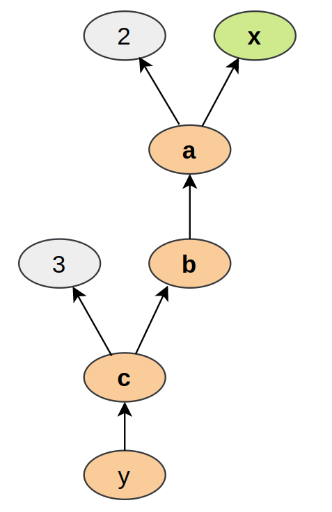

import os
import math
import numpy as np
import timeIntroduction to PyTorch
Import required libraries
# libraries for plotting
import matplotlib.pyplot as plt
%matplotlib inline
from IPython.display import set_matplotlib_formats
set_matplotlib_formats('svg','pdf')
from matplotlib.colors import to_rgba
import seaborn as sns
sns.set()
from tqdm.notebook import tqdm/tmp/ipykernel_50982/195479827.py:4: DeprecationWarning: `set_matplotlib_formats` is deprecated since IPython 7.23, directly use `matplotlib_inline.backend_inline.set_matplotlib_formats()`
set_matplotlib_formats('svg','pdf')# Import and check torch version
import torch
print("using torch", torch.__version__)using torch 1.12.0+cu113/home/thulasiram/miniconda3/envs/pytorch_learn/lib/python3.9/site-packages/tqdm/auto.py:21: TqdmWarning: IProgress not found. Please update jupyter and ipywidgets. See https://ipywidgets.readthedocs.io/en/stable/user_install.html
from .autonotebook import tqdm as notebook_tqdm# Set seed for reproducability
torch.manual_seed(42)<torch._C.Generator at 0x7feee50aa850>Tensors
# Create a tensor
x = torch.Tensor(2,3,4)print(x)tensor([[[0., 0., 0., 0.],
[0., 0., 0., 0.],
[0., 0., 0., 0.]],
[[0., 0., 0., 0.],
[0., 0., 0., 0.],
[0., 0., 0., 0.]]])# Tensor filled with zeros
torch.zeros(2,3)tensor([[0., 0., 0.],
[0., 0., 0.]])torch.ones(2,3)tensor([[1., 1., 1.],
[1., 1., 1.]])# Random values uniformly sampled between 0 and 1
torch.rand(2,3,4)tensor([[[0.2566, 0.7936, 0.9408, 0.1332],
[0.9346, 0.5936, 0.8694, 0.5677],
[0.7411, 0.4294, 0.8854, 0.5739]],
[[0.2666, 0.6274, 0.2696, 0.4414],
[0.2969, 0.8317, 0.1053, 0.2695],
[0.3588, 0.1994, 0.5472, 0.0062]]])# Create tensor in a given range with steps
torch.arange(0,20,2)tensor([ 0, 2, 4, 6, 8, 10, 12, 14, 16, 18])# Create tensor from a list
torch.Tensor([[1,2],[3,4]])tensor([[1., 2.],
[3., 4.]])x = torch.rand(2,3,4)# Getting the shape, size of a tensor
# Shape is an attribute of the tensor
# size() is a method of the tensor
shape = x.shape
print("shape", x.shape)
size = x.size()
print("size", size)
dim1, dim2, dim3 = x.size()
print("Size:", dim1, dim2, dim3)shape torch.Size([2, 3, 4])
size torch.Size([2, 3, 4])
Size: 2 3 4Tensor to Numpy and Numpy to Tensor
# convert numpy array to torch tensor
np_arr = np.array([[1,2],[3,4]])
tensor = torch.from_numpy(np_arr)
print("Numpy array:", np_arr)
print("pytorch tensor:", tensor)Numpy array: [[1 2]
[3 4]]
pytorch tensor: tensor([[1, 2],
[3, 4]])# convert torch tensor to numpy array
tensor = torch.arange(10)
np_arr = tensor.numpy()
print("pytorch tensor:", tensor)
print("Numpy array:", np_arr)pytorch tensor: tensor([0, 1, 2, 3, 4, 5, 6, 7, 8, 9])
Numpy array: [0 1 2 3 4 5 6 7 8 9]# set device as gpu
device = torch.device("cuda:0" if torch.cuda.is_available() else "cpu")
print("Device:", device)Device: cuda:0# send the tensor to the gpu
tensor = tensor.to(device)# We cannot convert a tensor on GPU to Numpy array
np_arr = tensor.numpy()TypeError: can't convert cuda:0 device type tensor to numpy. Use Tensor.cpu() to copy the tensor to host memory first.# Get the tensor on GPU to cpu and convert to numpy
np_arr = tensor.cpu().numpy()
np_arrarray([0, 1, 2, 3, 4, 5, 6, 7, 8, 9])Operations on Tensors
x1 = torch.rand(2,3)
x2 = torch.rand(2,3,)
y = x1 + x2
print("x1", x1)
print("x2", x2)
print("y", y)x1 tensor([[0.6440, 0.7071, 0.6581],
[0.4913, 0.8913, 0.1447]])
x2 tensor([[0.5315, 0.1587, 0.6542],
[0.3278, 0.6532, 0.3958]])
y tensor([[1.1755, 0.8658, 1.3123],
[0.8191, 1.5445, 0.5406]])# In place operation on x2
# x2 values will be changed in-place
x1 = torch.rand(2,3)
x2 = torch.rand(2,3)
print("x1(before)",x1)
print("x2(before)",x2)
# In-place operations are usually marked with underscore postfix "add_"
x2.add_(x1)
print("x1(after)",x1)
print("x2(after)",x2)x1(before) tensor([[0.9147, 0.2036, 0.2018],
[0.2018, 0.9497, 0.6666]])
x2(before) tensor([[0.9811, 0.0874, 0.0041],
[0.1088, 0.1637, 0.7025]])
x1(after) tensor([[0.9147, 0.2036, 0.2018],
[0.2018, 0.9497, 0.6666]])
x2(after) tensor([[1.8958, 0.2910, 0.2059],
[0.3106, 1.1134, 1.3691]])x = torch.arange(8)
print("X",x)X tensor([0, 1, 2, 3, 4, 5, 6, 7])x = x.view(2,4)xtensor([[0, 1, 2, 3],
[4, 5, 6, 7]])# swap the dimension 0 and 1
x = x.permute(1,0)
xtensor([[0, 4],
[1, 5],
[2, 6],
[3, 7]])# Matrix multiplication
# we can also use x@y
x = torch.arange(6).view(2,3)
w = torch.arange(9).view(3,3)
h = torch.matmul(x,w)
print("X",x)
print("Y",w)
print("h",h)X tensor([[0, 1, 2],
[3, 4, 5]])
Y tensor([[0, 1, 2],
[3, 4, 5],
[6, 7, 8]])
h tensor([[15, 18, 21],
[42, 54, 66]])Indexing
# Indexing wrks like in numpy
x = torch.arange(12).view(3,4)
print("X",x)X tensor([[ 0, 1, 2, 3],
[ 4, 5, 6, 7],
[ 8, 9, 10, 11]])# Get second column
x[:,1]tensor([1, 5, 9])# Get First Row
x[0,:]tensor([0, 1, 2, 3])# Get First two rows and last column
x[:2,-1]tensor([3, 7])# Get middle two rows
x[1:3,:]tensor([[ 4, 5, 6, 7],
[ 8, 9, 10, 11]])Dynamic Computation Graph and Backpropagation
Pytorch provides the gradients/derivatives of functions that we define. Using pytorch we compute the output and ask pytorch to automatically gets the gradients.
# we need to specify which tensors require gradients
x = torch.ones((3,2))
print(x.requires_grad)FalseEither pass te argument requires_grad=True or change it for an existing tensor using the function requires_grad_()
x.requires_grad_(True)
print(x.requires_grad)Truewe will calculate the gradient for the function: \[y = \frac{1}{|x|}\sum_i \left[(x_i + 2)^2 + 3\right]\] We will imagine \(x\) as our parameters, and we want to optimize the output \(y\). For this, we want to obtain the gradients \(\partial y / \partial \mathbf{x}\). For our example, we’ll use \(\mathbf{x}=[0,1,2]\) as our input.
# Only float tensors can have gradients
x = torch.arange(3, dtype=torch.float32, requires_grad=True)
print("X", x)X tensor([0., 1., 2.], requires_grad=True)# computation graph for the function
a = x+2
b = a**2
c = b+3
y = c.mean()
print("y",y)y tensor(12.6667, grad_fn=<MeanBackward0>)Each node of the computation graph has automatically defined a function for calculating the gradients with respect to its inputs, grad_fn. You can see this when we printed the output tensor \(y\). This is why the computation graph is usually visualized in the reverse direction (arrows point from the result to the inputs). We can perform backpropagation on the computation graph by calling the function backward() on the last output, which effectively calculates the gradients for each tensor that has the property requires_grad=True:
Using the statements above, we have created a computation graph that looks similar to the figure below:-

y.backward()print(x.grad)tensor([1.3333, 2.0000, 2.6667])We can also verify these gradients by hand. We will calculate the gradients using the chain rule, in the same way as PyTorch did it:
\[\frac{\partial y}{\partial x_i} = \frac{\partial y}{\partial c_i}\frac{\partial c_i}{\partial b_i}\frac{\partial b_i}{\partial a_i}\frac{\partial a_i}{\partial x_i}\]
Note that we have simplified this equation to index notation, and by using the fact that all operation besides the mean do not combine the elements in the tensor. The partial derivatives are:
\[ \frac{\partial a_i}{\partial x_i} = 1,\hspace{1cm} \frac{\partial b_i}{\partial a_i} = 2\cdot a_i\hspace{1cm} \frac{\partial c_i}{\partial b_i} = 1\hspace{1cm} \frac{\partial y}{\partial c_i} = \frac{1}{3} \]
Hence, with the input being \(\mathbf{x}=[0,1,2]\), our gradients are \(\partial y/\partial \mathbf{x}=[4/3,2,8/3]\). The previous code cell should have printed the same result.
GPU Support
gpu_avail = torch.cuda.is_available()
print(f"Is the GPU available? {gpu_avail}")Is the GPU available? True# Create a object device which will be assigned to GPU if available otherwise to cpu
device = torch.device("cuda") if torch.cuda.is_available() else torch.device("cpu")
print("Device",device)Device cudax = torch.zeros(2,3)
x = x.to(device)
print(x)tensor([[0., 0., 0.],
[0., 0., 0.]], device='cuda:0')# comparing cpu vs gpu execution
x = torch.randn(5000, 5000)
## CPU version
start_time = time.time()
_ = torch.matmul(x, x)
end_time = time.time()
print(f"CPU time: {(end_time - start_time):6.5f}s")
## GPU version
x = x.to(device)
_ = torch.matmul(x, x) # First operation to 'burn in' GPU
# CUDA is asynchronous, so we need to use different timing functions
start = torch.cuda.Event(enable_timing=True)
end = torch.cuda.Event(enable_timing=True)
start.record()
_ = torch.matmul(x, x)
end.record()
torch.cuda.synchronize() # Waits for everything to finish running on the GPU
print(f"GPU time: {0.001 * start.elapsed_time(end):6.5f}s") # Milliseconds to secondsCPU time: 0.40145s
GPU time: 0.07050s# The seed between CPU and GPU is not synchronized.
# we need to set the seed on GPU separately
if torch.cuda.is_available():
torch.cuda.manual_seed(42)
torch.cuda.manual_seed_all(42)
# Additionally, some operations on a GPU are implemented stochastic for efficiency
# We want to ensure that all operations are deterministic on GPU (if used) for reproducibility
torch.backends.cudnn.deterministic = True
# benchmark is to find the best algorithm to use the hardware when input does not vary
torch.backends.cudnn.benchmark = False